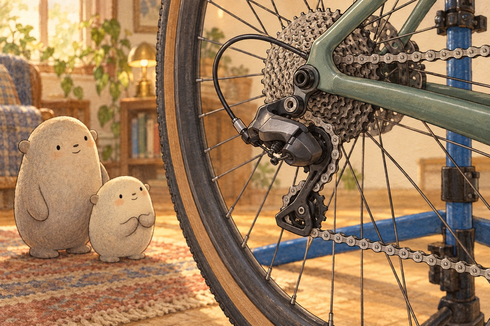
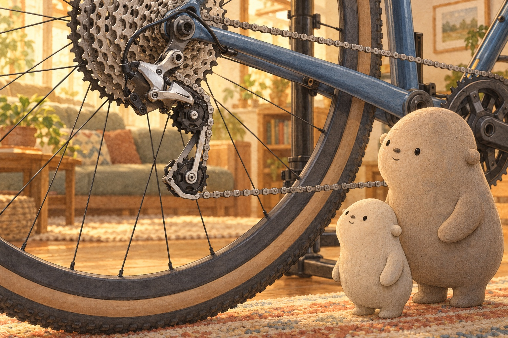
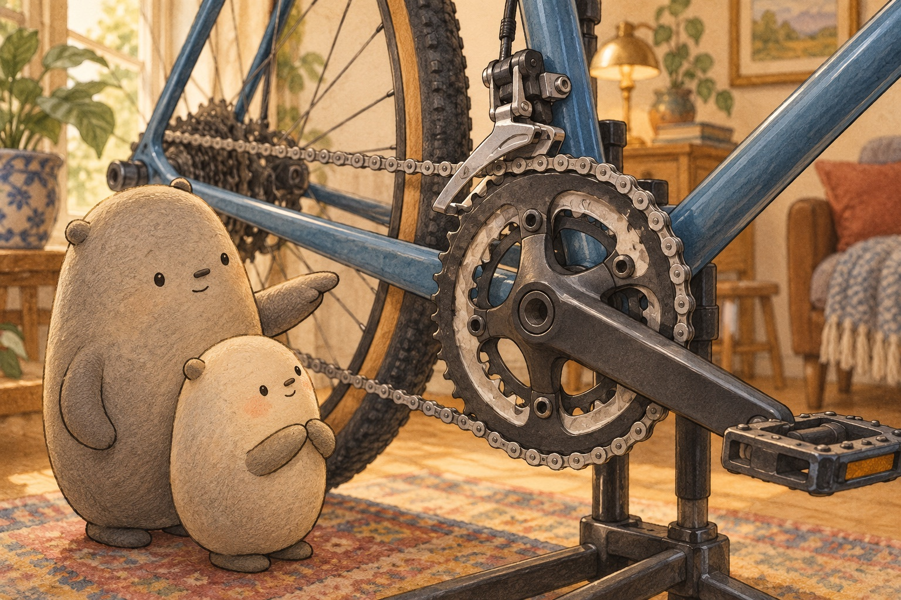
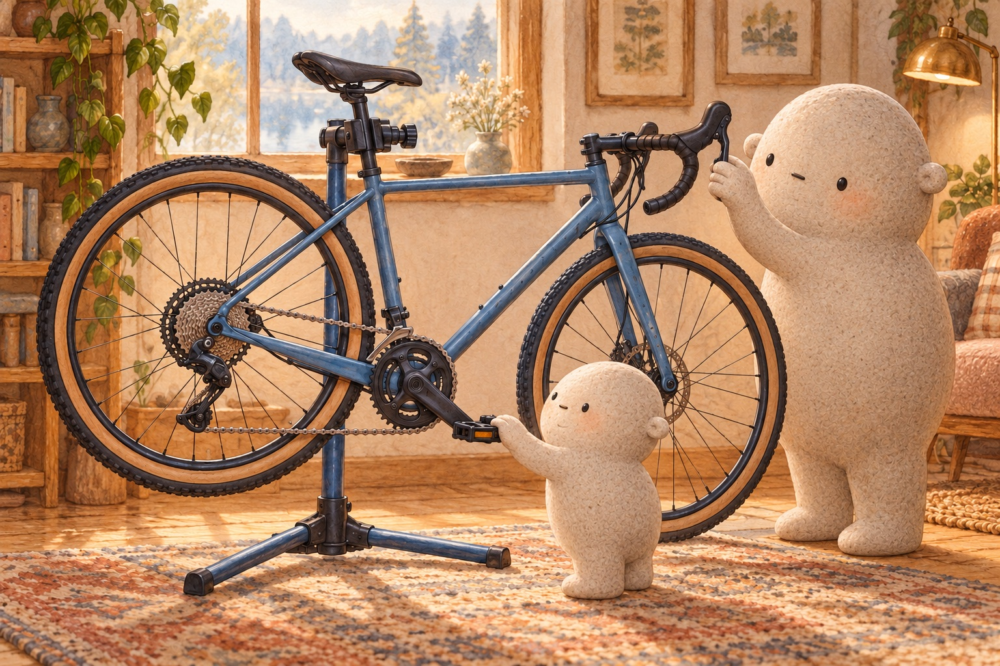
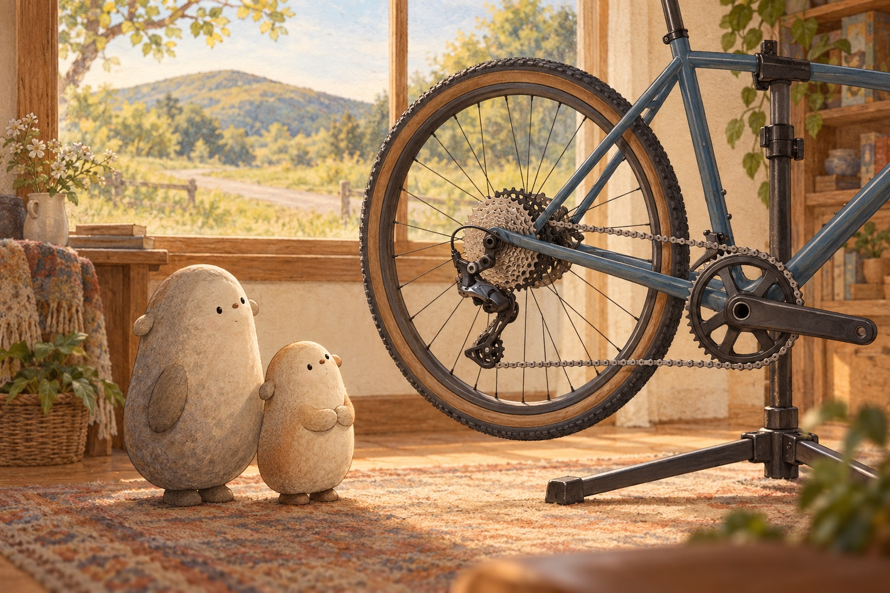

Six clues in one shifter click
A loop with teeth
Little traced the chain without touching it. The loop wrapped around a front chainring and one cog in the back cassette. Each gear had teeth that fit between the chain's rollers. When the pedals turned forward, the chain carried that turn toward the back wheel.
How do the gear teeth help the chain carry a pedal turn?

A click pulls a cable
Big pressed the shifter once while the chain moved. The lever pulled a short length of cable. That pull moved the rear derailleur sideways. When the shifter let cable out, a spring drew the derailleur back the other way.
What evidence connects the shifter click to the derailleur's sideways motion?

Guide it and keep it snug
Two small wheels turned inside the derailleur cage. The upper guide pulley lined the chain up with a cog. The lower tension pulley moved as the spring turned the cage. That motion took up extra chain, called slack, so the long loop stayed snug in every gear.
How are the two pulley jobs different?

A cage at the chainrings
This bike had two chainrings in front. A second derailleur sat above them. Its narrow cage surrounded the chain. As the cage moved sideways, it pressed the moving chain off one chainring so the neighboring chainring could catch it.
How does the front derailleur move the chain without carrying it around?

The chain must move
Little noticed that a click did not lift a still chain onto new teeth. The pedals had to turn forward. Then each arriving chain link could meet the shaped teeth on the next cog and climb into place. A derailleur guides; the moving chain completes the shift.
Why can a derailleur guide a moving chain but not place a still chain?

Choose the useful gear
On the biggest back cog, one pedal turn produced fewer wheel turns and needed less push. That easy gear suited a hill. On a small back cog, the wheel turned farther for each pedal turn, making a harder gear useful on flat ground. Tooth counts tell the ratio: 32 front teeth divided by 16 back teeth equals 2 wheel turns for one pedal turn.
Why does moving to a bigger back cog trade wheel turns for an easier push?
For a complete still story, download the foldable book.
How Bike Derailleurs Work
How does one click at the shifter move a bike chain onto a different gear?
Where shall we look?
Where does the chain travel?
Follow the chain around the front chainring, back to one cog in the cassette, and through the two small pulley wheels below.
A little explanation & something to try
The chain forms one long loop. It grips teeth on a front gear, called a chainring, and on one back gear, called a cog. Turning the pedals pulls the chain and turns the back wheel.
Try this. Use a finger in the air to trace the whole loop without touching the bike. Name the front chainring, back cog, and lower pulley wheels.
What does the rear derailleur move?
Look below the back cogs for the small arm that lines its upper pulley with the cog holding the chain.
A little explanation & something to try
On a mechanical bike, the shifter pulls or lets go of a cable. The cable and a return spring move the rear derailleur sideways. Its upper pulley guides the moving chain from one back cog to the next.
Try this. Hold two hands apart like neighboring cogs. Move one finger sideways from one hand to the other to model the chain's short trip.
Why are there two small pulley wheels?
See the chain bend around an upper guide pulley and a lower tension pulley before it heads forward again.
A little explanation & something to try
Different cogs need slightly different amounts of chain. A spring turns the derailleur cage, and the lower pulley moves with it to take up slack. The upper pulley guides the chain toward the chosen cog.
Try this. Curve a piece of yarn around two bottle caps on a table. Move the lower cap gently and notice how the extra loop becomes longer or shorter.
Why do big and small back cogs feel different?
Compare the largest back cog with the smallest, then find the teeth that catch the chain.
A little explanation & something to try
A big back cog is an easy gear for hills: the wheel turns less for each pedal turn, so the pedals need less push. A small back cog is a hard gear that can carry the bike farther per pedal turn on flat ground. With 32 teeth in front and 16 in back, the wheel turns 2 times for one pedal turn.
Try this. With an adult, place the bike upside down on a flat floor or secure it in a stand. Turn one pedal slowly forward by hand while only the adult shifts. Watch the derailleur move the chain. Count teeth on the smallest and biggest back cogs, then count wheel turns for one pedal turn in an easy gear and a hard gear. Keep fingers away from the chain, gears, and spokes whenever anything is turning. No riding is needed.
Bike number crunch
Add or subtract each set of bike numbers, regrouping ones and tens.
Create another bike addition or subtraction equation with two two-digit numbers that needs regrouping.
1. One parts tray holds 28 gear teeth cutouts and another holds 35. How many teeth cutouts are there in all?
28 + 35 =
A small hint
Add 8 and 5 first. Trade 10 ones for 1 ten, then add the tens.
2. A rider plans 72 pedal turns and has finished 38. How many pedal turns remain?
72 − 38 =
A small hint
Trade 1 ten for 10 ones. Subtract 8 from 12, then subtract the tens.
3. Two ride notes record 47 wheel turns and 18 more wheel turns. How many wheel turns do they record altogether?
47 + 18 =
A small hint
Add 7 and 8. Regroup 15 ones as 1 ten and 5 ones.
4. A box begins with 61 gear-number cards and 24 are used. How many gear-number cards are left?
61 − 24 =
A small hint
Trade 1 ten so 1 one becomes 11 ones. Subtract ones, then tens.
5. One bike outing lasts 56 minutes and another lasts 28 minutes. How many minutes is that in all?
56 + 28 =
A small hint
Combine 6 ones and 8 ones. Trade 14 ones for 1 ten and 4 ones.
6. A gear maker checks 93 teeth and marks 47 as finished. How many teeth still need checking?
93 − 47 =
A small hint
Trade 1 ten so there are 13 ones. Subtract 7, then subtract the tens.
Inside a rear derailleur
Tap a number on the picture to see what each part is and what it does.
Fig. 01 · Parts and labelsA rear derailleur, from the side
The parts, one by one
- Hanger: A small metal tab on the bike frame. The whole derailleur hangs from it, right beside the back gears. Look for the brown tab in the middle of the back gears.
- Cable: A thin wire that runs from the shifter on the handlebar. When you click the shifter, the cable pulls the derailleur over. Look for the thin tan line on the left.
- Barrel adjuster: A little twisty knob where the cable meets the derailleur. It helps each click land the chain on the right gear. Look for the small knob at the end of the tan cable.
- Limit screws: Two little screws that work like fences. They stop the cage before it goes too far, so the chain cannot fall off the gears. Look for the small gold screw near the top, just under the gears.
- Linkage arms: Two arms that tilt together like a slanted box. When the cable pulls, they swing the cage sideways to the next gear. Look for the arms in the middle.
- Cage: Two thin plates that hold the two little wheels. A spring gently turns the cage back, which keeps the chain snug. Look for the long plates at the bottom.
- Top wheel: The guide wheel. It sits just under the gears and lines the chain up with the gear you picked. Look for the toothed wheel under the big gears.
- Bottom wheel: The tension wheel. The spring pulls it back to take up slack, so the chain stays tight and never droops. Look for the lowest wheel.
- Chain: One long loop of links. It carries the push from your pedals to the back wheel. Look for the dark chain curling over the gears and around both little wheels.
- Back gears: A stack of gears of different sizes, called the cassette. The chain on a big gear makes hills easier. On a small gear, each pedal turn takes you farther. Look for the big stack of pale gears at the top.
A friendly drawing, not a repair guide. Real derailleurs come in many shapes.
Anatomy by Ryan, github.com/wheresryan22/anatomy, MIT.
Quiz
Answer key
- Quiz 1
- Cable pull moves the rear derailleur sideways so its guide pulley can line the moving chain up with another cog.
- Quiz 2
- The lower pulley moves with the spring-loaded cage to take up chain slack and keep the loop snug.
- Quiz 3
- A front derailleur's cage nudges the moving chain sideways from one front chainring to another.
- Quiz 4
- The biggest back cog is an easier gear: the wheel turns less per pedal turn, so less pedal push is needed.
A little book of shifting clues
US Letter · one-sided · portrait · 100% / actual size. Turn off fit-to-page and browser headers and footers.
- Print the PDF and follow the fold guide on its page 8 panel.
- An adult makes the single center cut shown by the solid line.
- Fold into a little book. The cover, six scenes, and fold guide make eight pages.
Write the path of a shift
Choose one clue. Say the whole idea, then draw or write it.
When the lever pulls the cable, …dictate what the rear derailleur does
The lower pulley keeps the chain snug by …dictate how it takes up slack
A big back cog feels easier because …dictate what changes for each pedal turn
Draw one bike gear clue and add a small arrow to the part whose job you explain.
SAY IT FIRST. THEN DRAW OR WRITE.
A temporary space. Copy your words before closing or reloading; they are not saved or sent.
gearchaincogteethderailleurcablespringlevershifteasy gearhard gear
Does your sentence name a part, tell what it does, and connect that job to the chain?